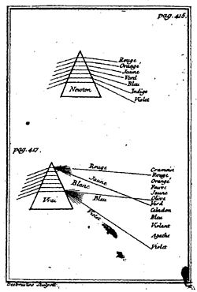

What is Newton's biggest error?
Opticks (1740)

Energy conservation
Unifying force underlying mechanics, heat, light, electricity and magnetism
Psychophysics (e.g. volume control)
Ophtalmoscope
Unconscious inference (perceptions are involuntary and pre-rational)
Prism adaptation
Whoever, in the pursuit of science, seeks after immediate practical utility may rest assured that he seeks in vain. — von Helmholtz (Heidelberg 1862)
Neuronal plasticity...
But what is really changing?
Neuronal plasticity...
But what is really changing?
Brain holds several coordinates systems for the different perceptions
- Audition
- Propioception
- Vision
Neuronal plasticity...
But what is really changing?
Brain holds several coordinates systems for the different perceptions
- Audition
- Propioception
- Vision
Prisms change the reference for visual coordinates but not for the other systems
Brain has to make changes so that the references match again